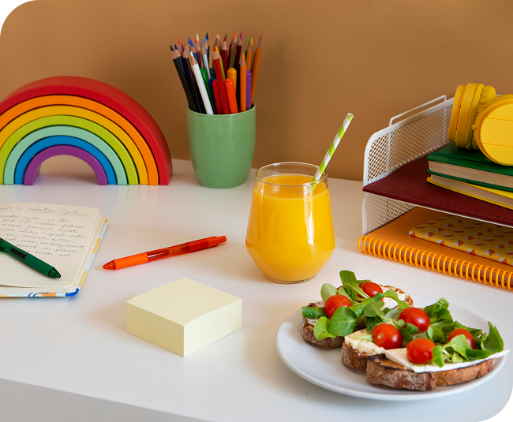

인재채용
인재채용
home > 인재채용 > 직무소개
Business Position
직무소개
경영지원부
- 부서소개
- 중장기 경영전략을 수립하고, 임직원들이 보다 편하게 일할 수 있는 최적의 경영환경을 제공하기 위한 각종 지원업무를 수행하고 있는 부서입니다.
- 주요업무
-
변화하는 경영환경에 맞춰 농협식품의 사업목표 및 방향 수립부터 신사업 기획,
경영목표를 관리하는 업무를 수행합니다. - 필요역량
- 조직 내외부의 다양한 협업자들과 원활한 의사소통을 위한 커뮤니케이션 역량이 요구됩니다.
마케팅부
- 부서소개
-
현장에서 고객의 마음을 사로잡을 수 있는 방법에 대해 고민하고, 농협식품의
매출 창출 및 확대를 위해 최전방에서 고객과 소통하는 부서입니다. - 주요업무
-
농협식품의 상품을 유통채널에 입점시키는 업무부터 매장 판촉물 제작 기획 등
판촉 전략 수립 등 영업관리 업무를 수행합니다. - 필요역량
- 돌발상황에 잘 대처할 수 있는 순발력 및 문제해결능력이 요구됩니다.
영업부
- 부서소개
-
상품기획/ 상품소싱/ 품질관리/ 클레임 등 고객과 회사의 접점이 되는 상품을
기획하고 운영하는 역할을 담당하며, 상품을 개발하기 위해 고민하는 부서입니다. - 주요업무
-
시장 조사, 매출 분석, 트렌드 등을 파악하여 시장의 흐름을 파악하고, 경쟁사를
분석하며 농협식품의 얼굴이 될 상품을 출시하기 위해 고민합니다. - 필요역량
-
소비자의 니즈에 맞춘 상품을 개발하기 위해 시장 트렌드를 빠르게 읽을 수 있는
능력과 창의력이 요구됩니다.
급식사업부

- 부서소개
- 신뢰할 수 있는 우수 가공식품을 학교에 공급하기 위한 업무를 수행하는 부서입니다.
- 주요업무
-
전국 곳곳의 품질 좋은 식품을 제조하는 매입처를 발굴하고 학교 급식전용상품을
개발하는 업무를 수행합니다. - 필요역량
-
식품 위생등의 클레임 발생 시 가장 치명적인 부서이므로 신고한 문제대응능력과
기동성이 요구됩니다.